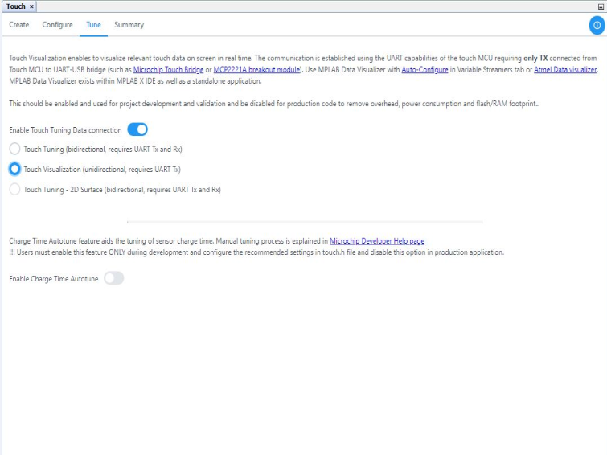
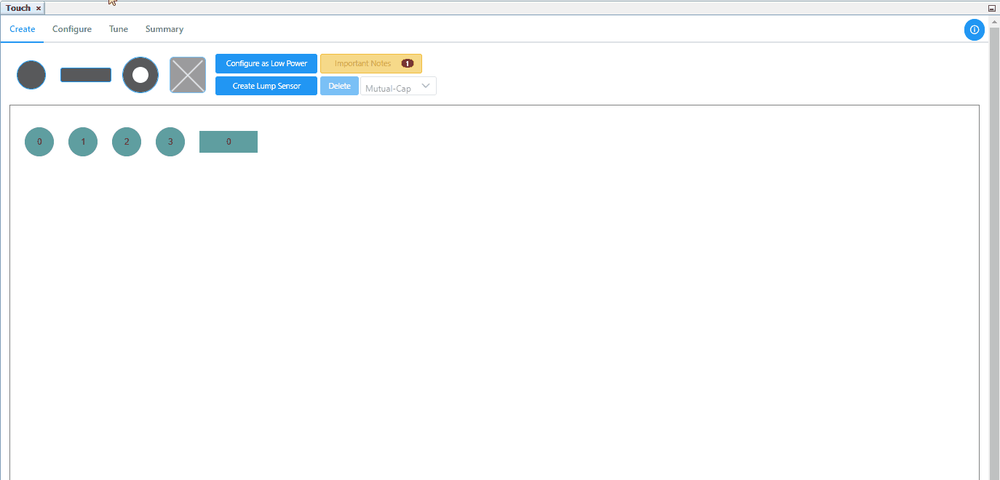
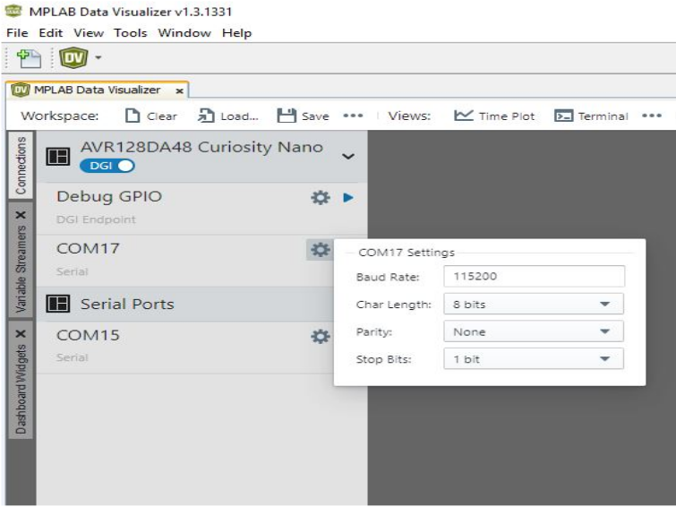
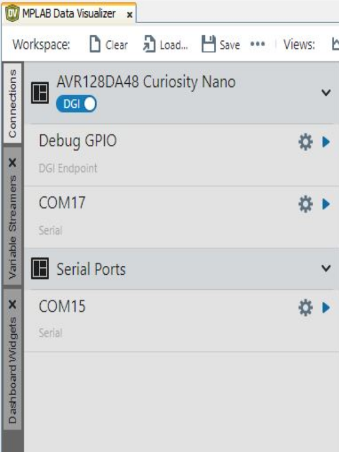
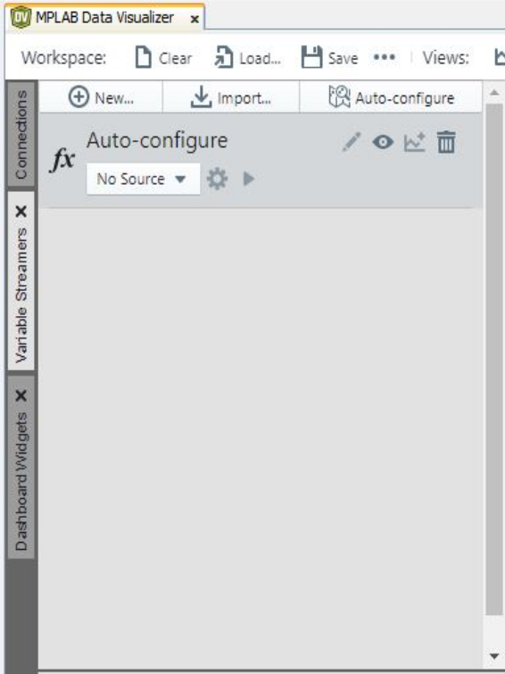
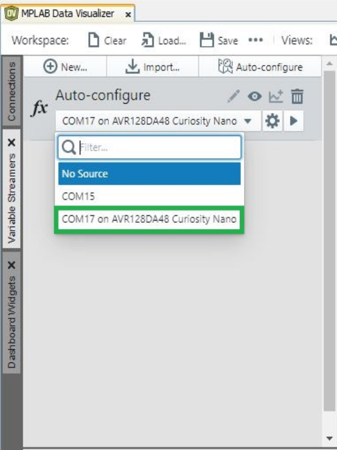
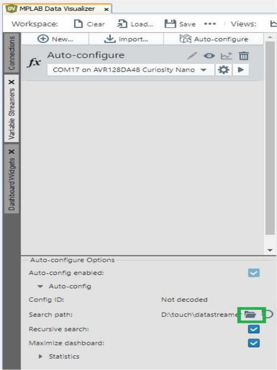
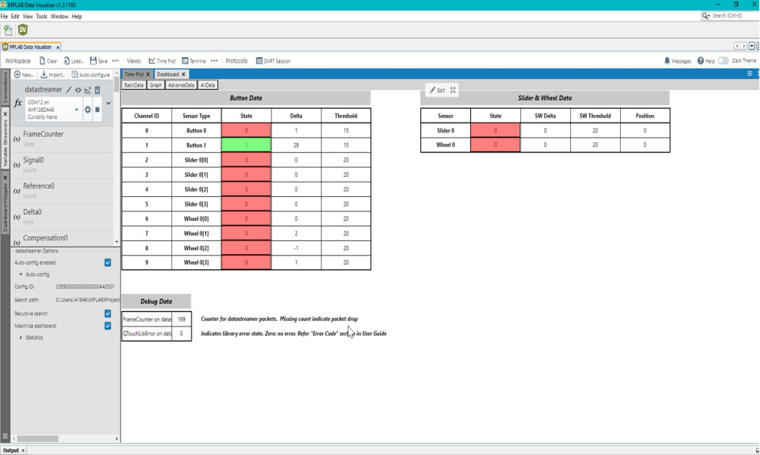

3.1 Visualize Touch Data Using MPLAB® Data Visualizer
Overview
This section provides step by step information on visualize touch data using MPLAB® Data Visualizer
Installation
- Go to Menu > Tools > Plugins.
- Check if Installed section has MPLAB® Touch , if not
- Select MPLAB® Touch Plugin from the available plugin tab and click on Install.
Project Configuration and Generation
- For creating and configuring a project for visualization, please follow the steps in the 1.1.2 Generate Touch Project with MCC Melody page in the case of MPLAB® Code Configurator (MCC) Melody or the 1.1.1 Generate Touch Project with MCC Harmony page in the case of MCC Harmony.
-
After the creation and configuration of the sensors, navigate to the Tune tab in the touch configurator, enable the Touch Tuning Data connection and select Touch Visualization as the option (MCC Melody/ Harmony).

Data Visualization
- Open the MPLAB® Data Visualizer plugin/standalone.
-
In the Connections pane, click on the COM Port and enter the required Baud Rate under the COM Settings
 -
Select the Variable Streamers option from the left pane.
 -
In the Variable Streamers tab, select the Auto-configure option by clicking on it.
 -
Select the source as the connected device from the source drop-down list.
 -
Now set the correct path to the data streamer files that have been generated from MCC by clicking on the Folder icon and navigating to the correct folder path.
 -
Then start the COM port streaming by clicking on the Start icon, once the streaming has started then the data visualization will be displayed in the Dashboard pane.
